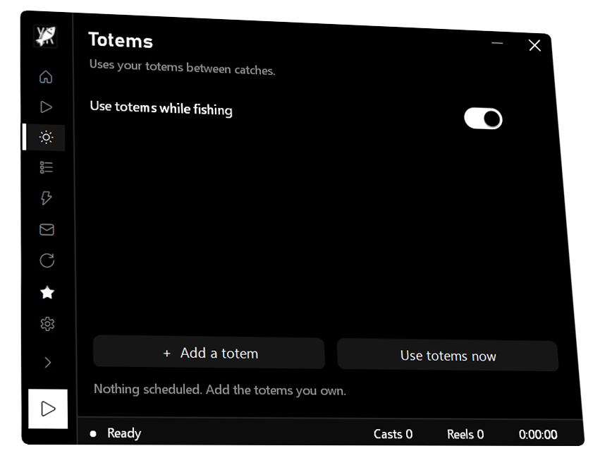
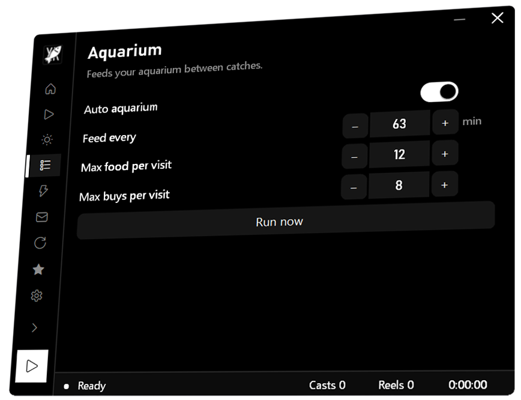
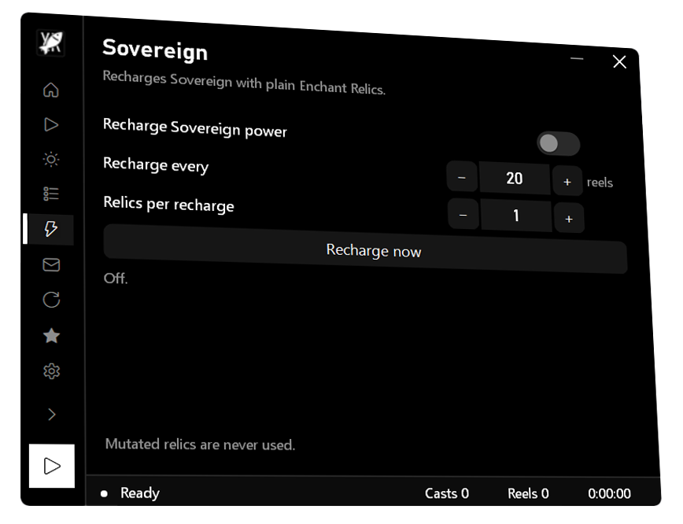
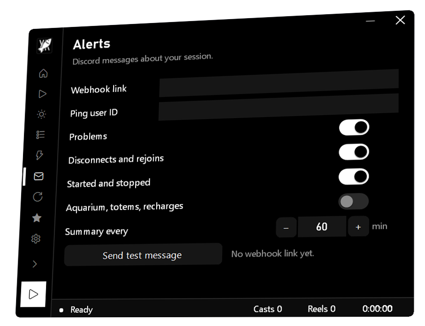
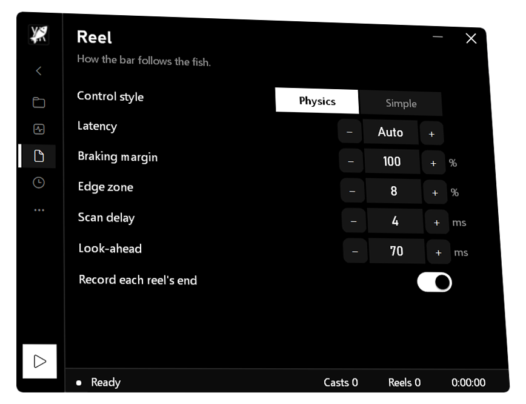

Everything around the fishing.
The things you'd otherwise stay at your PC for.
Totems, on schedule.
Add the totems you own and when to use them. It uses them between catches.

Your aquarium, fed.
Choose how often, how much food and how many buys. It goes and comes back between catches.

Sovereign, charged.
Recharged with plain Enchant Relics every so many reels. Mutated relics are never used.

Discord, when it matters.
Problems, disconnects, starts and stops, and an hourly summary. /start and /stop work from your phone.

Tune it, or don't.
Control style, latency, braking and look-ahead are there if you want them. Otherwise it works it out.

And the rest. It rejoins if Roblox kicks you and keeps itself up to date. Boosters get Plus: goals that stop fishing and ping you.
Get FISCHXR